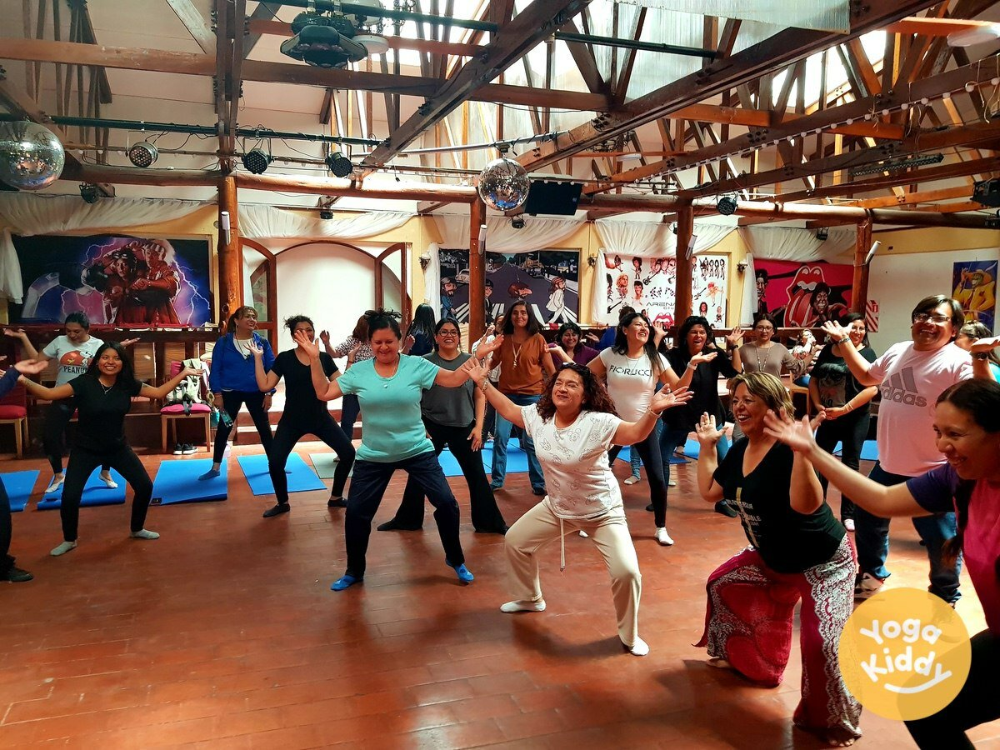
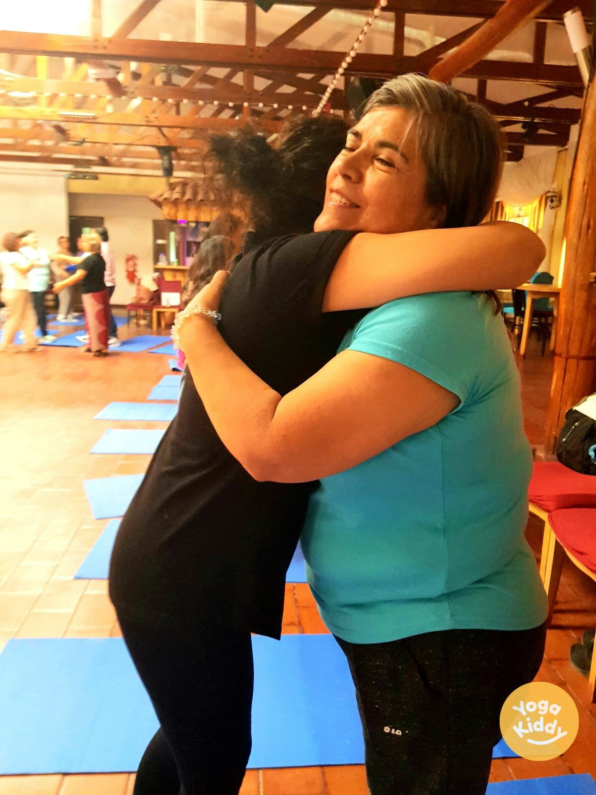
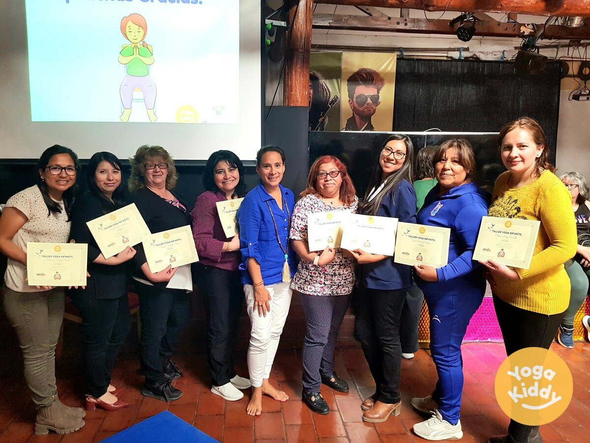
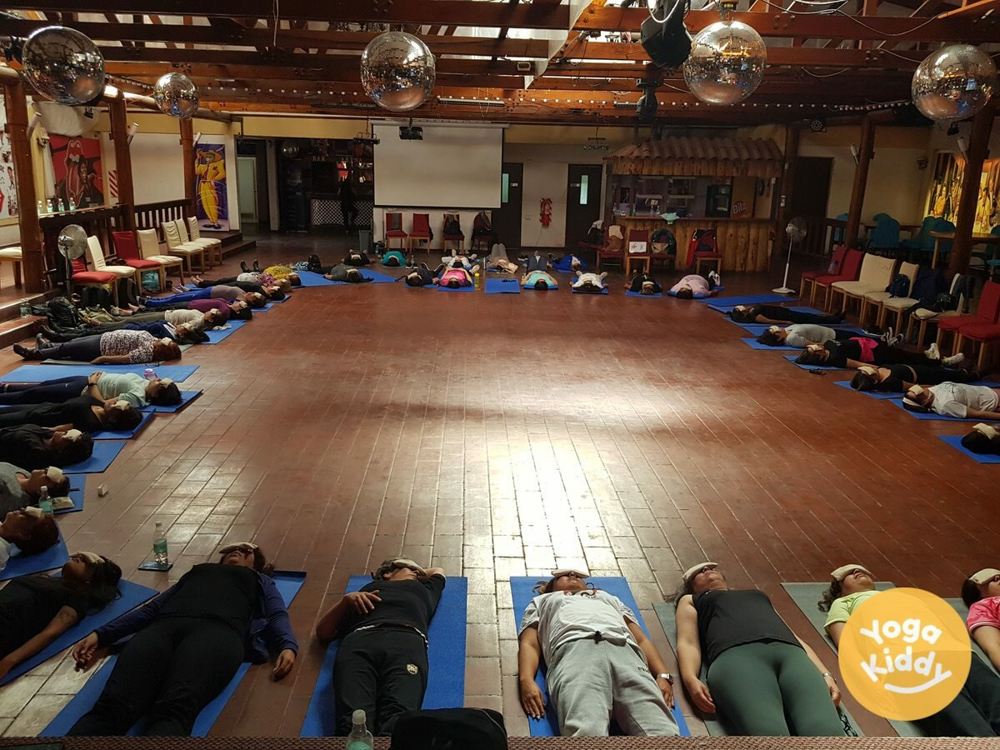
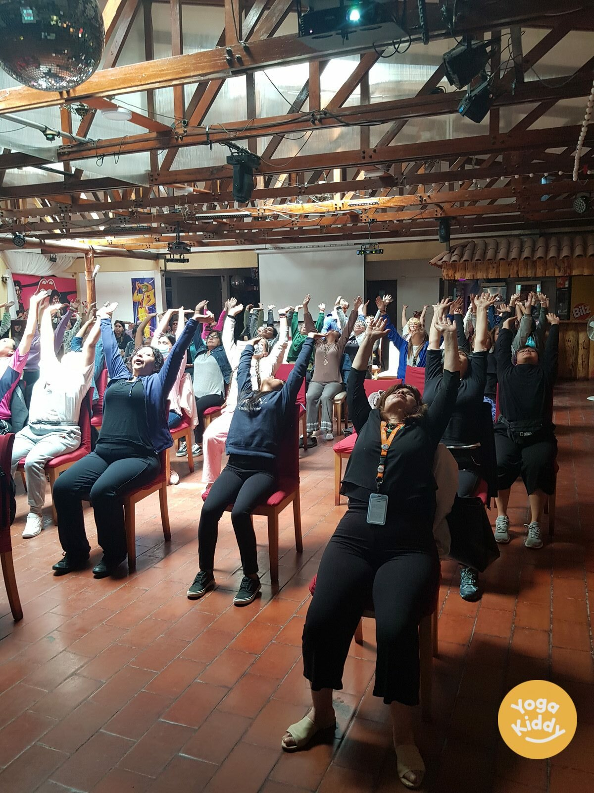
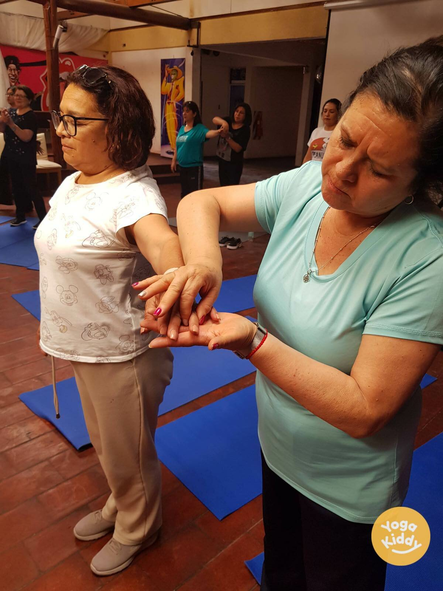
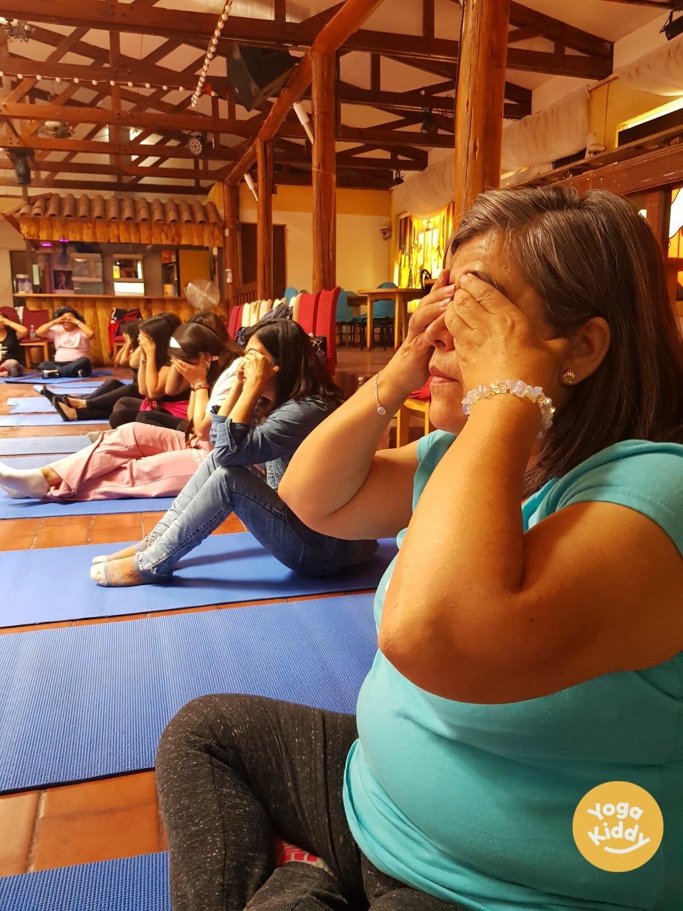

El taller de Yoga Infantil que se realizó en Calama, Chile, junto à COMDES fue una experiencia realmente extraordinaria. Tuve el privilegio de volver a la ciudad y dirigir el taller para 100 profesores de 1º y 2º de primaria. Los profesores estaban ansiosos por aprender cómo introducir e incorporar el yoga en su aula y en las actividades escolares diarias.

La Corporación Municipal de Desarrollo Social de Calama (COMDES) es una corporación de desarrollo social con sede en Calama, Chile. Es una organización sin ánimo de lucro que trabaja en colaboración con el gobierno local para mejorar la calidad de vida de los ciudadanos de Calama. La organización puede centrarse en prestar servicios sociales a la comunidad, como vivienda, asistencia sanitaria, educación y formación, y apoyo a grupos marginados. También pueden planificar y ejecutar programas e iniciativas sociales que promuevan el crecimiento económico inclusivo, la reducción de la pobreza y la mejora de las condiciones de vida de la población, de forma sostenible y eficiente.

A lo largo del taller, exploramos una amplia gama de prácticas de yoga, posturas y ejercicios que están diseñados específicamente para los niños. Estas prácticas están diseñadas para ser apropiadas para la edad, divertidas y atractivas para los niños, y promueven el bienestar físico, mental y emocional. Los profesores también tuvieron la oportunidad de aprender a adaptar estas prácticas a las diferentes clases y grupos de edad.

Lo más sorprendente del taller fue el entusiasmo y el compromiso de los profesores. Aprovecharon la oportunidad de aprender algo nuevo y estaban ansiosos por ponerlo en práctica. Estaban sorprendidos por los efectos positivos del yoga en su propio bienestar y en el de sus alumnos. Pudieron ver cómo el yoga puede ayudar a los niños a centrarse, concentrarse y regular sus emociones.

El taller fue también una oportunidad para el desarrollo y el crecimiento personal. Nos centramos en las prácticas de autocuidado y atención plena, que son igual de importantes que la capacidad de transmitir estas prácticas a los niños. Fue una invitación a que los profesores se cuidaran a sí mismos para poder cuidar mejor a los niños.

Muchos de los profesores dudaban en probar el yoga, pensando que les resultaría demasiado difícil o que no eran lo suficientemente flexibles. Pero el taller demostró que el yoga es accesible para todos, independientemente de la edad, la capacidad o la experiencia. Insistimos en que el objetivo principal es compartir valores positivos y marcar la diferencia en la vida de los niños.

En conclusión, el taller de Yoga Infantil en Calama fue una experiencia increíble. Los profesores que participaron en el taller adquirieron una gran cantidad de conocimientos y habilidades que les ayudarán a llevar los beneficios del yoga a los niños en sus aulas. Ahora tienen las herramientas que necesitan para crear un ambiente seguro, divertido y enriquecedor donde los niños puedan aprender, crecer y prosperar. Fue un hermoso despertar para el alma, que dejó un impacto duradero en las vidas de todos los que participaron.